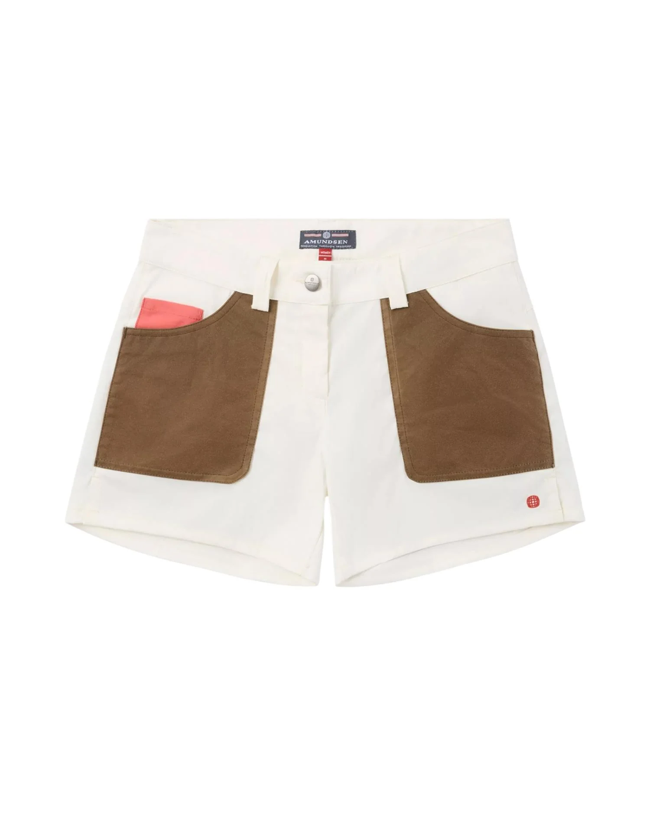
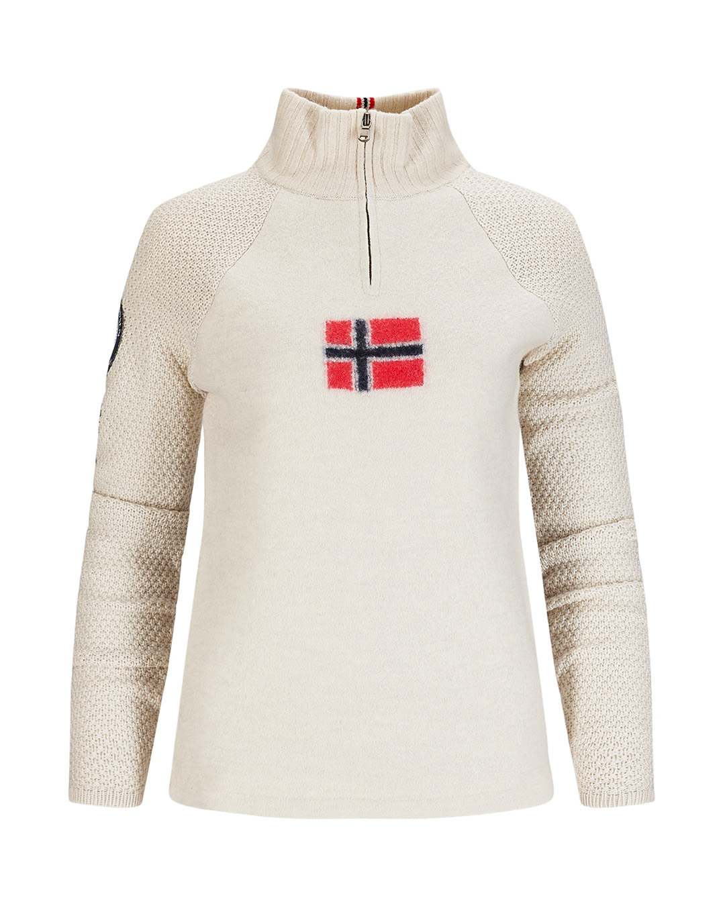
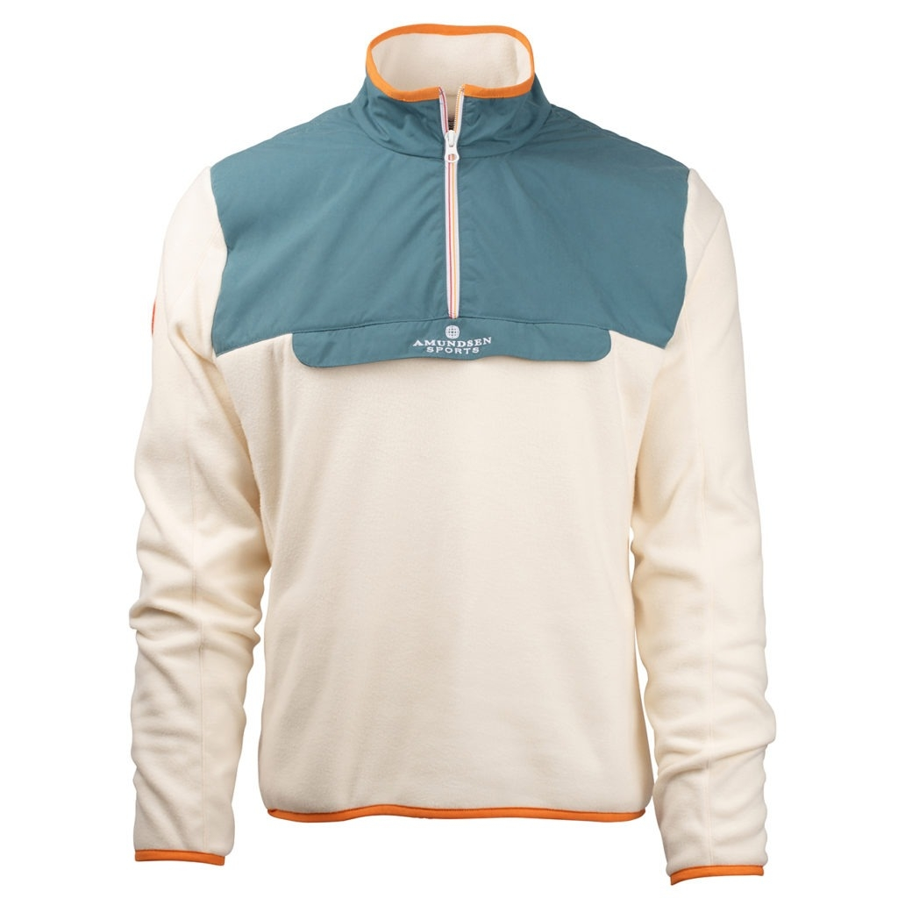

Top 3 Products

Amundsen 5Incher Field Shorts Womens Shorts Hvit
Made for rugged outdoor use, in extra strong stretch Cordura from Sweden, bolstered with waxed cotton canvas reinforcements from Scotland.

BOILED SKI SWEATER W/ FLAG
Merino wool ski sweater with traditional boiled treatment for enhanced durability and wind resistance. Features natural odour resistance and moisture-wicking properties whilst maintaining breathability. Perfect for après-ski relaxation or everyday outdoor adventures.

Amundsen Roamer Wool Fleece Mens Faded Blue
Super popular fleece sweater from Amundsen Sports. The Roamer Fleece is a soft and comfortable fleece that is lightweight, durable, and incredibly versatile. The perfect sweater for late summer evenings at the cabin, by the campfire, or for everyday use in general.